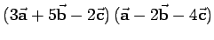
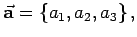

Inhalt Index DeskTop Bronstein

 Geometrie Vektoralgebra und analytische Geometrie Vektoralgebra Skalarprodukt und Vektorprodukt
Geometrie Vektoralgebra und analytische Geometrie Vektoralgebra Skalarprodukt und Vektorprodukt


 |
(3.273) |
| (3.274) |
| (3.275a) |
| (3.275b) |
| (3.276a) |
| (3.276b) |
| (3.277a) |
| (3.277b) |
| (3.278) |
| (3.279) |
| (3.280) |
| Beispiel A |
|
 |
| Beispiel B |
|
|
| Beispiel A |
|
Die Komponenten eines Vektors  sind keine skalaren Invarianten, da sie in verschiedenen Koordinatensystemen unterschiedliche Werte annehmen können. |
| Beispiel B |
|
Die Länge eines Vektors d.h. die Größe ist eine skalare Invariante, da sie in verschiedenen Koordinatensystemen den gleichen Wert besitzt. |
| Beispiel C |
|
Das Skalarprodukt eines Vektors mit sich selbst ist eine skalare Invariante, d.h. da . |